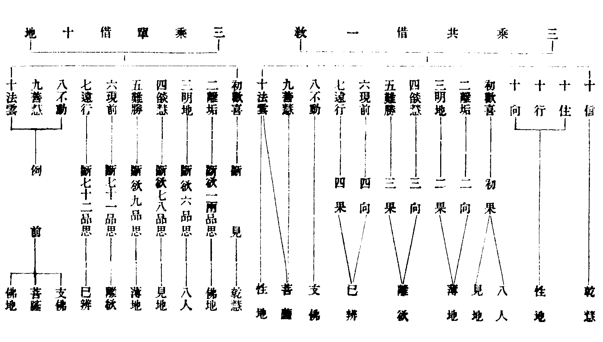
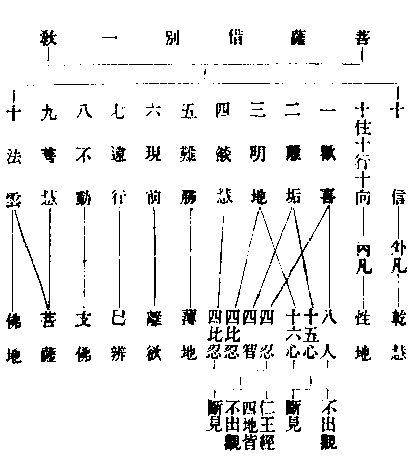
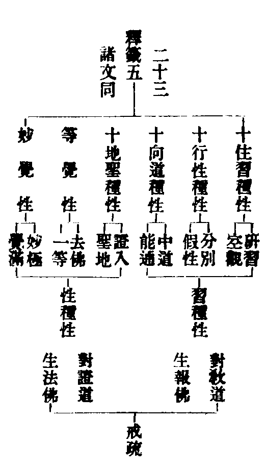
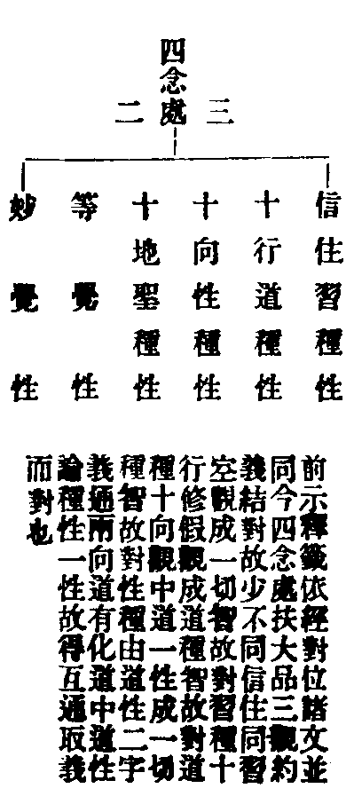
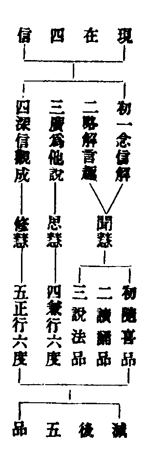

卍新纂大日本續藏經 第57冊
No.977 四教儀備釋 (2卷)
【元 元粹述】
第 2 卷
天台四教儀備釋下
次明緣覺亦名獨覺。
輔行(九下十五)引大論二十一云迦羅此翻緣覺亦名獨覺(文)四教義二(十八)標云辟支迦羅此翻緣覺釋中開二謂緣覺獨覺新華嚴音義云二名各有梵語也畢勒支底迦此曰各各獨行佛者覺也鉢羅底迦此翻緣覺(翻譯名義亦開二名)今謂梵音奢切難以考論恐迦羅名通大論義翻二種音義分二恐梵語復有別名故也緣覺者觀內因緣稟佛教法獨覺者觀外因緣無師自悟文句(四七)引大論云獨覺者出無佛世緣覺者願生佛世(文)俱舍明獨覺自有二種一麟喻二部行(如析上玄)若集解云慈恩基師引仁王經列獨覺眾又云釋迦出世五百獨覺從山中來至於佛所學者如何消釋此耶(文)補註(六)亦引而釋曰本是聲聞根性以緣悟菩提故名支佛(文)今謂仁王經初本無獨覺之名但云復有八百萬億仙緣覺慈恩意以緣覺一眾諸經兼聲聞而列之若二乘別列如仁王也然以緣覺稱獨覺者何耶蓋根性不異名義互通如緣覺人雖值於佛樂獨善寂通名獨覺即慈恩所云也獨覺之人雖無師教觀外因緣亦名緣覺如光明云我不恭敬緣覺菩薩智者科為懺無佛世敬田惡業又獨覺人亦通見佛文句(四七)引華嚴等獨覺有三類一者知佛出世即先入滅或佛神力徒於他果二者出無佛世三者雖生佛世願見佛故不即捨壽亦不被移(文中義具此三)五百獨覺山中來者即第三類通義雖爾別釋如前又二辟支各有大小准輔行(九下十五)有三義一具相名大不具名小二兩大中現通者大無通者小三現通中說法大不說者小又四教義(四)宿世偏修性念處者小兼修共念處者大又先達立漸頓二義如輔行等七生初果後方極證為小頓證為大若與聲聞對辨者如文句七(二十六)云二乘六義同十義別同出三界同盡無生同斷正使同得有餘無餘同得一切智同名小乘別開十義者行因久近六十劫百劫故(一)根利鈍(二)從師獨悟(三)無悲鹿羊(四聲聞如羊驚絕奔走支佛如鹿馳並順)有相無相(五)觀廣略(六)能說得四果法不能說法得煖法(七有云支佛能說法令人得四果聲聞不能說法不能令人得煖法)在佛世不在佛世(八)頓證漸證(九)多現通少說聲聞不定(十)文中六十劫百劫者析玄(上一)明修行聲聞利者三生鈍者六十劫支佛利者四生鈍者百劫(文)然則聲聞勝支佛耶聲聞但入見道支佛極證無學還以支佛為勝又有相者支佛無相者聲聞分別功德論(五卷初謂字函)云身子有七相目連有五相阿難二十相獨難陀有三十相難陀金色阿難銀色(文)是則聲聞亦有相耶元是聲聞根性不論種相若是支佛轉為聲聞不妨有相四教義(二)云迦葉舍利弗等皆是辟支根性人也(文)若文句解形色憔悴謂二乘不修相好此以大形小不可為並又根利鈍者別對支佛是法行聲聞是信行通論各信法(文句五三十一妙樂六二十八)諸文更有侵習不侵習亦由根利鈍故支佛不制分果四教義(二)釋小獨覺云本是學人在人間生或須陀洹七生既滿不受八生自悟成道(輔行亦云七生初果)此似有分果者恐先是聲聞根性出無佛世後證支佛是故云爾又恐據其行因借果名以格量非謂支佛教門所制更俟誠證(云云)別行疏云支佛侵習為淺處通教正習盡為彼岸(文此以三藏支佛通教菩薩合論淺處涅槃)四明記(上)云支佛修行不立分果深觀緣起久種三多(作福供佛聞法)福慧既隆預侵二習(預者進侵習氣非預先也此正釋支佛不可連下文作難)雖未發真四流莫動(欲有見無明)名得淺處頓證極果名到彼岸通教菩薩正盡得淺處習盡到彼岸(雖未下藏通各開以對淺處彼岸)舊以此說為難既云預侵二習復云雖未發真故今科註以革異說況支佛謂理在習氣外縱云侵習不云習盡言未發真義亦無失學者詳之天親論有四種聲聞准例支佛亦具四種妙樂四(三十)又文句(四四)云今經但見聲聞得解不見支佛者支佛是中根既值佛出現入聲聞數隨根得悟故不別標緣覺耳。
值佛出世(止)餘七支為苦諦也。
三識下註氣息者初託胎位中有煖識息三俱在母胎也名色者一七日至五七日皆是名色觸者根境相對也有者業成能有果也分明三道因果廣略如前若三世二世一心等義如法界次第備釋。
既名異義同何故重說(止)故言緣覺。
機宜不同者聲聞總觀四諦緣覺別觀十二無明緣行等境也若滅觀下觀也諸文更有逆順等異如阿含明始無明終老死名順觀始老死終無明名逆觀又止觀禪境以有支在初此推因知果也釋籤先從受支起觀此推果知因也(此如輔行又四念處約十二支觀受觀見明推尋觀破之義)又支佛根利不制分果對聲聞四果鈍根而立恐是小教中正意若般若經明獨覺向大乘同性經明支佛十地(集解引之)乃大部中被機兼說耳說十地等且示階羗亦非制果不可為妨支佛自悟還受戒否若發無作未必更受。
言獨覺者(止)故名獨覺。
觀外因緣無師自悟未必一向獨宿孤峯(大論國王悟道緣如集解)華嚴明菩薩下兜率放光照之覺即捨身不覺即徙向無佛處設在此界亦是佛教所不及處願見佛者不捨身不被移也。
兩名不同(止)故居聲聞上。
習氣者慣習氣分如器中香其香雖盡餘氣尚存統論諸文有三家二即今是見思家習耳大經云我衣我鉢見習也舍利弗嗔畢陵伽慢思習也。
次明菩薩位者。
菩薩者具云菩提薩埵摩訶薩埵舊翻大道心眾生新譯云覺有情以上求佛道下度眾生故此菩薩於當教內亦稱大乘(如折玄)然教門所說全不斷惑三祇百劫但是伏惑行因耳其意云何四教義三(六)云三藏之教正化二乘傍化菩薩若說菩薩斷惑受生二乘即疑若結盡而得受生者諸聲聞人得羅漢果將不受生耶是故不說菩薩斷結受生也(文)又妙玄五(十三)云令生事善故作是說欲求佛者改惡從善(文)又四教義三(二)云雖修性念處而不斷結為生三界度眾生故(文)由教不詮中道應本故留結惑受生利物故藏菩薩不斷明矣(雜編發軫鈔有說不須煩引)若大論云聲聞人言菩薩不斷結使乃至坐道場然後斷者是為大錯又云豈有菩薩具足三毒能集佛法(文)此龍樹申摩訶衍義以大破小故作此說非謂鹿苑三藏菩薩皆明斷惑更委揀者初在鹿苑稟教之時及方等中橫稟小者必謂實歷三祇百劫伏惑不斷若方等般若轉入衍中來至法華會歸一實定無始終三祇伏惑權小教門暫爾施設故得大論約實斥也雖無實行若釋迦果後權示利生不妨自歷三祇百劫故有尸棄然燈等事今之所辨且約鹿苑三藏當分故言不斷法華文句六(二十七)引阿含五佛子釋更與作字名之為兒四果支佛名佛真子菩薩不斷惑子義未成(文)荊谿云大論斥權非謂全無(文)似成却有斷惑菩薩今備引註之庶絕異論妙樂七(十七)云阿含至子義未成者既阿含中亦明不斷結惑菩薩而大論斥權非謂全無(斥權云無立權則有是則大論唯云大錯乃破權說非謂阿含全無不斷惑者此段明經論破立舊云非謂全無子義者誤矣)論云迦旃延造者從所造論及所計者說(此段明論斥執權者也)豈以會二還歸阿含法華準舊十二年前一何可笑(此段因便破古古師不分大小菩薩及昧水牛白牛之異若通云會二乘歸菩薩則法華開已仍舊同於十二年前伏惑菩薩故云可笑餘釋不當)止觀三(十三)云煩惱脂消者名伏為消也故別行(下三)云但伏惑不斷如無脂肥羊取世智為般若即此意也又俱舍婆沙意云下八地惑初修禪時先已斷竟此有漏斷亦是伏義如輔行三(下四)會釋(云云)若止觀三(十六)云得法眼照俗諦(文)此似先斷塵沙者亦有漏智照得相似法眼耳故止觀第五云三藏菩薩有漏神通非真起應世智分別非法眼明(文)。
從初發心(止)百劫種相好。
生滅四諦為所依境弘大也要制其心志求滿足名為誓願度者越生死流到彼岸也誓若無境名為彺願不行六度其願則虗又此化他四門徧學異乎二乘一門自行又二乘雖無破戒乃至愚癡行非利生不名六度蓋奪而言之別對諦緣三祇百劫名四階成道。
言三阿僧祇劫者(止)總別念處(外凡)。
八十中大劫 大劫三無數(謂一增減為小劫此一增減亦名中劫如劫章其小劫名自有十種當詳)
二十增減為中劫八十增減為大劫積此大劫成三阿僧祇俱舍第十二引解脫經有六十數後失其八今阿僧祇第五十二輔行更引拂石芥子(一上)華嚴亦有一百二十更零三數總一百二十三數(新譯四十五)非小乘中義(云云)釋迦翻能仁亦云度沃焦(大論明如來遇佛緣如集解)尸棄此云寶髻非七佛中尸棄也常離女身及四惡趣者應具離五障(一惡道二貧窮三女身四形殘五喜忘)故戒疏云初僧祇得五種功德(一生天二生貴家三男身四根具五知宿命)然玅玄但云初僧祇常離女身(四（二十七）四教義三二文同)釋籤三(十五)云第三僧祇始離五障方乃不墮(文)舊定云初祇但離女身第三僧祇方具離五障耳其如戒疏文何有云初僧祇有遇緣不遇緣異不遇退緣得離五障如戒疏若遇惡緣復有退至第三祇方得永離則如釋籤此說雖無文證義恐如是又亦可云初祇離障且約功能第三祇離乃據位說也成論以念處為位不退煖頂為行不退忍為念不退數論以下中上忍為三不退淨名疏以煖頂忍為三不退各隨義對不須和會。
次從尸棄佛(止)即煖位。
然燈者瑞應云定光集解引經作錠光(云云)七莖蓮華者初儒童為五百道士講論得銀錢五百後問王家女瞿夷買得五華并女寄二華供養於佛故云七莖諸文但云摩納五華奉散也(集解具引瑞應)釋迦文者具云文尼亦牟尼此翻寂默瑞應經(有二卷言字函上卷初)云佛因記曰汝自是後九十一劫劫號為賢汝當作佛號釋迦文菩薩已得記言疑解望止[火*霍]然無想寂而入定便逮清淨不起法忍(文)既云便逮法忍乃證無生豈得三祇皆是伏惑孤山作疏判瑞應經在鹿苑攝疏云不起法忍者若論密意即圓地住證無生忍(文)神智補註亦判歸鹿苑言不起法忍者乃是顯露不定例同提謂今謂經文顯說孤山何得云密提謂自論結益神智何得引例又旻智行解曰逮及也如法華云逮得涅槃者文句三(三十五)釋云三祇百劫乃得涅槃逮之言遠乃及耳文今謂法華但云逮得故作故作遠及而釋指在三祇百劫之後今第二僧祇乃云便逮法忍義亦未允淨覺發軫鈔下據玄籤引證通教行因判歸方等妙玄七(十一)云昔為摩納五花奉散布髮掩泥躍身虗空得無生忍既云斷惑故知是通佛行因之相也(文)釋籤八(三)云昔為摩納者具如瑞應然燈授記得生忍故知是通佛也(文)妙玄九(十四)明圓行中云儒童見然燈佛得無生忍行有真體(文)從進老唯經五義判在鹿苑一談入胎但云貫日之精二遊四門厭生老病死三明成道時方離三毒四委明降魔之事五始終不談法界實相等若玄籤證通圓者經文自局引用則通如依正法念明四種阿難演小成大之類也故知便逮法忍准經意解還是便及後時得忍之位更不退轉以第二僧祇望聲聞為煖煖必至涅槃故也今復考經上卷有云菩薩於九十一劫修道德學佛意通十地行在一生補處後生第四兜率天上為諸天師(文)且小乘經不明十地恐霅川之判為優則不起法忍證通佛因不妨斷惑若降生等相在方等中且就三藏境本而說則亦無大害也後賢審之。
次從然燈佛(止)即頂位。
毗婆尸翻勝觀亦云徧見優婆塞戒經云於迦葉佛滿三祇者隨機異說耳此明三祇等義並出大論俱舍婆沙。
經如許時(止)是下忍位。
尸毗翻與檀翻為施尸羅翻好善即戒善也羼提翻忍辱歌利翻惡世無道又云鬪諍抒音汝酌取也弗沙亦云底沙翻增勝本住百劫修種相好因讚彼佛功超九劫故九十一劫而成道也螺髻仙人名尚闍黎有畫僧形者非劬嬪未知翻譯六度滿文應在三祇之後百劫之前福義緣起備在輔行(三下初)唯弗沙緣如集解引。
次入補處生兜率(止)即三藏佛果也。
此段具八相一從兜率下二託胎三出胎四出家五降魔六成道七轉法輪八入涅槃梵王昔緣備在密迹經集解亦略引三轉四諦法輪一示轉謂此是苦等二勸轉謂此是苦汝應知等三證轉謂此是苦我已知不復更知乃至此是道我已修不復更修一一轉皆生眼智明覺名十二行如文句及記釋化城喻品(云云)維摩經亦云三轉法輪於大千其輪本來常清淨薪盡火滅者佛身薪智慧火身滅智亡名無餘也大乘則云機薪既盡應火云亡。
上來所釋(止)略明藏教竟。
三人三因大異三果小同同斷出等約果言也由旬亦云踰善那此翻限量或四十里或十六里言三百者語出化城喻品三界處名為三百止觀七(二)又約空觀及惑對釋(云云)。
次明通教者(止)故名通教。
此是大乘初門與三義共利根菩薩接入後教故四念處有三通義一者因果俱通通當教是二者因通而果非通即被接者是三者通別通圓即藉通開導人是謂別圓用通而為方便但成別圓因果人也言說是事即空故無若名共教但得近邊共二乘失於遠邊菩薩受接二義兼收故云通教通前之義未見祖文。
依大品經乾慧等十地即是此教位次也。
此是三乘共位若備盡通教位義先達以五別三借說栝諸文一三乘共備別教始終位次二單借別教十地亦三乘共位三別為通教菩薩借別一教(此是三借是如止觀第六破思假中輔行六上釋然止觀前二借合作一科皆共位故釋中復開為兩第三借作一科獨菩薩故下復圖示之)別為菩薩立忍名別明菩薩燋炷十地(具如玅玄四（三十）此名二別并前三借共為五別)大品更說十地菩薩為如佛(輔行明通二種如佛以釋大品一別為菩薩立忍名第十名菩薩地到共位佛地故云如也又被接人至十地破無明能八相作佛似通教佛故云如也釋籤亦明圓教觀行如佛相似如佛但非今通教所論)及被接等俟下略明先示三借。

(單借十地既乾慧斷見何位伏惑如輔行六上八云彼此地前通為伏惑通雖無位即未斷惑不入地故文意指地前修觀伏惑也)。
(又妙樂二（二十二）云或指地前假立七賢（文）燋燋十地亦以乾慧斷見發真為初焰伏惑之位意亦例爾有云利根者即伏即斷但未見祖語)。

且通教十地已具何須借位及初燄等良以如來善巧被物機既不一教亦含容借別位名判通斷證義蘊經論吾祖備明之也又初燄者妙玄四(三十一)云別圓各逗一種根性故用發真為初燄(別初地圓初住)通教為逗多種根性所謂別圓入通教含容取乾慧耳(大品明初地燋炷大論明三處初燄燄約能燋譬智炷約所燋喻惑三處者通別圓也三教含容通故曰別圓入通非被接義)若鈍根者八人見地是初燄利者於乾慧即能斷結即是初燄(文)且乾慧初燄三通言之是何根性須知論釋燋炷雖通三教乾慧初燄只是通教忍名者大論為菩薩立三忍一伏忍乾慧地柔順忍性地三無生忍三地已去乃至十地皆菩薩位(玄文具出)。
乾慧地(止)初果齊。
兩地斷見者止觀六云三地據斷見之初四地據斷見之後皆不出觀(文)輔行六(上七)以借別斷見位對通教揀云通雖二地斷時仍促三乘共故雖促復長(文)八人者止觀云八忍也。
五薄地(止)燒炭成灰。
輔行六(上七)云言共聲聞等者通教二乘七地以前與菩薩共名共聲聞若爾八地已上過二乘地何故亦名共菩薩耶答以初名後從本立名不同別圓始終別故(云云)。
九菩薩地(止)淨佛國土。
通教亦無中道應本以誓扶習而生三界道謂化道觀即空觀帶空出假故云雙流遊諸世間譬如兒戲亦如幻師種種變現神名天心通名慧性天然之慧徹照無礙故曰神通化諸眾生令生正見我成佛時來生其國故云淨佛國土。
十佛地(止)炭灰俱盡。
七寶天衣異木樹草座表殊勝自然也通亦是丈六之身或十里百億神通變現耳住空故劣住中故勝以通教被接有合身義故云帶劣勝應舊問別圓成道在初寂場鹿苑唯明三藏成佛今通教佛為何處成如法師云只一金剛土臺成道四機所見不同若華嚴鹿自論大小兩始不可以轉法輪難成道也合明八相但此文略正習俱除者兼前總舉。
經云三獸渡河(止)即此教也。
河喻空理菩薩正習俱盡如象得底支佛侵習如馬次深聲聞斷正使如兔最淺此出涅槃經又經云等文在中論恐論引經故云經耳指偏真為實相菩薩至果名佛不名佛者據因而說又恐以中奪偏故云也。
此教三乘因同果異(止)同證偏真。
三因大同三果小異異則習盡不等同乃共觀即空不同三藏諦緣度別分段者支分形段三界生死也。
然於菩薩中有二種(止)故言通後。
利根通後者被接也被字去聲如來被下之義接即點示接入也究論此多就通論復是定教及非秘密原夫如來出世直欲眾生悟佛知見由機不等從實施權具談四教於四教中機又不同復於權說言中巧妙點示實理故有被接(點示之相妙玄二四明別圓接通中寄三法以示三根解源謂非漏非無漏空不空一切法趣釋籤三（十九）解云云具論則有四正三接雖有三接不出四正)聖教來此如涅涅槃七種二諦大品八地聞中古師不曉遂興諍論有二十三家明乎二諦唯莊嚴開善擅風流之名莊嚴謂佛果出二諦外(即今被接)開善謂佛果不出二諦(通當教佛)吾祖妙契佛意深究化源故明被接則佛旨教文俱無壅矣此利根菩薩纔證真空即為點示若鈍根菩薩同二乘人至法華會方乃會入又別圓接通接聖不接賢接真不接俗若圓接別接俗不接真接賢不接聖更有三根及按位勝進按位者以位對位勝進者次第差降陞前進後也大綱既得網目可尋。
問何位受接(止)別初地圓初住。
三根者此就利根受接以論若妙玄明三根解源通教鈍根及別圓接通合為三也上根三地四地等者二地俱斷見惑總而言之若究論須至四地以通三地未出觀故輔行則云四地為上(義兼五地)六七為中八九為下(文)今進一位者教位從容文或進退故不同也又經論說多附下根所接之教者合云能接似即按位真即勝進今但十向輔行則云七地以前入別十住八地以去接入十行知佛證法是入迴向(文)又妙玄教正具明三接止觀行正但論一接若真位受接者受應作被謂用真位以被接也若欲文順應改二句云若入似位若入真位則答進入何位之問。
問此藏通二教(止)則一槩為利。
同而不同者斷證雖同教行有異界內者對方便等土說析色入空者外計析至鄰虗今總觀生滅對破外道汝析非正亦名析色義備輔行(三下一十五)初門者通後別圓故體色入空者諸法如幻當體即空槩者平斛木也。
問教既大乘(止)略明通教竟。
朱雀天子南門也今指通教為共般若通言方等若論共部方等義疎如前已說。
次明別教者(止)此竝別教之相也。
教等八法皆別者獨被菩薩三諦隔歷三智次第三惑前後五行差別位不相收一因逈出一果不融無量四諦如前已明二乘縱於方等般若得聞別法亦皆自謂非己志分。
華嚴明十住(止)豈得定說。
華嚴前無十信後無等覺於十住品前明十梵行自古講者指為十信四念處(三初)云於十住中多明圓義於登地中多明別義(文)故華嚴位義通圓別今且示別故云住行向為賢十地妙覺為聖本業瓔珞亦明六輪(如法數對)金光明指真諦所譯勝天王般若也五行者聖梵天病嬰兒也又仁王般若明五十一位但無等覺四念處(三)云瓔珞結諸方等仁王結般若法華在後不明次位但決了諸權而入於實涅槃亦不明位同開佛性入秘密(前是一部之後故結法華是一期之後故不結具故彼文有人欲指楞嚴六十聖位是結醍醐純圓修證其義似明非祖文意)。
然位次周足(止)自下細釋。
此凡聖位中有教證二道地前屬教登地為證此約行教證也又一教始終俱為教道若說十地已證之法名為證道此約說教證也(玄籤借用證權實部則具四種輔行釋別教教權證實但明三種)復論竪入橫學兩種四教釋籤十(二十七)云別教復有四者別教十住修生無生十行修於無量十向修於無作登地證於無作故云有四又十行中習諸佛法具足入於一十六門亦名為四問住已習八何故行中更習十六答前是自行隨用一門後為化他是故行中更習前八是故十六俱須廣習(文)更有三根出假十信上根十住中根十行下根(四教俱論三根出假如止觀六（二十三）)又對五忍十信伏忍十住信忍十行去柔順忍十地無生忍玅覺寂滅忍(妙宗中（十八）亦對圓位)若論真緣則地前為緣修登地為真修緣謂作意緣念真謂任運相應元是地師之義今家復加觀義空假為緣中道為真通圓亦有此之二義(云云)六種性習如下對。
初言十信者(止)通教乾慧性地齊。
信等十名楞嚴具釋但彼文在圓今別位耳此云伏見思諸文有云伏五住蓋別十信伏惑有通別故別論見思通則五住此位出假即名上根淨名疏七(二十一)云菩薩化物心重自行則輕故慈悲重者不務斷結從相似空解即便出假見思未破故云有疾(文)既能出假破塵沙否淨名疏記無文或云伏見及上根十信侵習七住已前此兩位皆破塵沙者未詳。
次明十住者(止)行三百由旬。
十住乃至十地別名學者非實並略不釋備在集解須者往尋習種性者瓔珞經上卷(賢字函)明六種性以對別位(淨名疏第九亦借別名以顯圓)今家玄籤四教義戒疏等並依經列四念處中少有不次又地持論略明二種(亦名經彌勒造賢字函)如戒疏列六種後復用二種及對教證前後生報佛法佛併圖而會伸之。

六種性者種別性分也地持第一云種性者名為種子名為界名為性(文種子不同有六界分)又性通六位種局在因故前四名種等覺雖因望前稱覺二種者地持經云略說二種性種性者是菩薩六入殊勝展轉相續無始法爾是名性種性習種性者若從先來修善所得是名習種性(文)戒疏以六種對位後復明二種者以六位不出地前修習登地證性故用地持結攝六種雖不顯標意必如是況梵網是華嚴結經地持正宗華嚴故宜用彼結攝瓔珞又與約行教證其義宛齊故復例之自古以戒疏文難今備引註戒疏云性習二種若據位分習種在前性種在後若據行論性習同時前後不定(標約行中義)依體起用(約中道理起觀行用)先明性種後明習種尋用取體(從自行用取中道體)先習後性(自依體下釋同時不定義)與教證二道相似就位以論教道在前證道在後(約行故證)據行論之教證同時前後不定(此標)依體起用先證後教(望證道理起教道用)尋用取體先教後證(尋教道用證中道體)習種能生報佛性種能生法佛(文地前既論自行修習至果合生報佛登地證性合生法佛智與體冥任運起用故不論應佛也異解備諸章藻)梵網經中更有六種一習種性二長養性(只是研習增長與習種性通對十住)三性種性四不可壞性(俗諦建立故不可壞與性種通對十行)五道種性(十向)六正法性(通收聖種等妙三種)。

慧眼者古德五眼頌云。
天眼通非礙 肉眼礙非通 法眼唯觀俗
慧眼了知空 佛眼如千日 照異體還同
玅玄三(十一)云十住正修空傍修假中十行正修假傍修中(文)謂期心為傍也初住斷見即離四趣身子昔生至六住有退者此見思俱斷思既未盡見亦餘殘故有退墮如四明答日本難(云云)。
次明十行者(止)成道種智。
諸文云十住修空斷見思十行修假破塵沙十向修中伏無明此以觀對位也若云初住斷見二住至七住斷思八九十住斷界內塵沙十行斷界外塵沙此約惑分齊也四念處四云十住斷界外上品塵沙十行斷中品塵沙十回向斷下品塵沙(文言三品者生無生八門為上品無量四門為中品無作四門為下品)此以惑從教也以別是界外教或純用假觀攝故然塵沙惑體只是見思無明就菩薩化他分別藥病得名塵沙就眾生論通別見思耳妙宗云見思重數如塵若沙(文)又復斷塵沙之相以修假觀名伏觀成俗顯為斷也若塵沙習懶於化導且三品塵沙與三根出假何異蓋三品塵沙約一人竪論三根出假約三人橫辨又三根出假通乎四教三品塵沙局在別論又此十行明橫學四且無作四門為圓為但若圓無作十行位淺尚未修中如何能說以此化他耶若謂但中釋籤五(初)云若附彼教而為相狀(文)既附彼圓豈應是但雜編五(十四)云十向圓修可由實道(智轉行融乃修圓中)十行無作且順權方(只是但中無作)良以修中之位已深出假之位尚淺位深故知昔日化他無非妙行位淺故知將來自行亦是但中不可以實難權以他妨自(文)其說切當學者知之附彼圓教者但為明於無作相狀能附豈可全同深位然此出假若果但中圓機起時將如何赴之當知圓機自感圓應十行出假乃教道說無稽之問不足評矣。
次明十回向者(止)居方便有餘土。
回事向理回別向圓行者至此空假心滿智轉行融但無中體乃修圓中四念處云別向圓修霅川云可由實道(雜編但不合云只緣被接方曰圓修)若玅玄云十回向始正修中此中但理不具諸法者教道所說三觀次第是故云爾今約圓修乃是約行註云行不退者化他行滿無退轉也前七住還斷惑證空名位不退後初地去名念不退中道正念二邊莫動。
次明十地者(止)十法雲地。
註云乃至等覺俱名聖種性者據同證論準經必須開等覺性無功用者不加功力任運流入初地即同初住分身百界二地去十倍增之又二地去各斷一品無明乃教道說八相者一生兜率二託胎三住胎四出胎五出家六成道七轉法輪八入涅槃(華嚴亦列降魔如前示)五百由旬者三界加方便實報五百約惑加塵沙無明約觀加假中也寶所者喻分證寂光。
更斷一品無明(止)即此佛也。
破十二品稱為妙覺皆教道說蓮華藏世界如華嚴經華藏世界品說鈍根者迷中重故。
有經論說(止)略明別教竟。
八地入無功用如華嚴妙覺位但破一品無明未見所出至六地斷思與羅漢齊者取十度義以第六般若空慧斷惑故也如止觀第六借位中(云云)十度者六外加願智力方便三賢者別住行向住果報土義則屬圓此仁王經偈文別教更有縱橫之義非此可盡。
次明圓教者(止)圓建立眾生。
圓者法界無外佛魔同途理事雙融唯心唯色三千三諦妙不思議也稟斯教者圓觀三諦圓伏五住圓斷三惑一行一切行一切行一行圓位例然妙用莊嚴故云自在四悉普益故曰建立具如止觀第一引華嚴(云云)。
諸大乘經論說佛境界(止)並屬圓教。
初發心者三因開發即初住位二住已去莫不皆然故結云四十二位薝方等者觀眾生品天女彈斥身子之文一心五行者經云復有一行是如來行所謂大乘大般涅槃佛性之理有人入大海浴亦涅槃文娑伽羅此云鹹海隨處受名如華嚴也檮香為丸出楞嚴三昧經清涼有解如義例第七喻疑顯正(云云)。
今且依法華瓔珞(止)八妙覺。
法華但有五品六根瓔珞具明五十二位妙樂(三四)云若云圓位六即亦足何須更列四十二耶以分真位長故借別位分其品秩(文)昔賢據此謂圓教本無位次但借別顯圓今謂妙樂意以五十二位在經論中多被別人祖師用釋圓位故云借耳又有云五十二位名雖在別圓亦同用以分深淺豈可圓教全無位次大品四十二字華嚴初住八相法華五品六根等皆圓位義也故曰顯一理則始終無二存諸教則因果歷然既稟教修行安得無位耶妙玄(五)又揀諸文開合有四一開前合後如大經三十三天(住行向為三十地等妙為三)二合前開後如仁王十四般若(合三十心為三十地為十等覺為一總十四忍轉入佛心名之為智)三前後俱開如大品四十二字(對四十二位)四前後俱合如法華開示悟入及遊四方(對四十位)又楞嚴明位有六十前加三漸次(名字即)及立乾慧地(觀行即)向後地前立四加行并常五十二共成六十。
初五品者(止)故名隨喜。

對三慧如文句又妙樂十(十二)云何故現在唯四信滅後立五品答其義既齊四五無別但是滅後加讀誦位為第二品耳(文)妙心體具者介爾有心三千具足此具妙故即空假中一念既爾一塵不虧心佛眾生三無差別解行之要學者當知。
內以三觀(止)妙覺彼岸。
五悔者初可名悔餘四云何勸請則悔請佛入滅隨喜則悔嫉他修善回向悔於慳吝發願悔於懈怠也理者無生理懺也事者作法取相也此三懺法通大小乘具如光明文句又能觀名理周所緣即懺悔處若懺悔名梵語懺摩此云悔過華梵雙舉也十惡者文中闕殺生一惡口有四惡普賢觀云舌根起五種惡口不善業者准優婆塞戒經加說無義語故云五種。
莫見此說(止)尋之思之。
此斥偏執理性無修無證輕侮聖教不敬尊容乃墮外道自然之計唯我智者建立解行了修即性全性起修性雖本然修常宛爾故清涼國師云撮台衡三觀之玄趣使教合亡言之旨心同諸佛之心不假更看他面鼠唧鳥空者愚人談即談空有言無旨如恠鼠之唧鳥聲之空空也廣在經論者稱性即具義備聖典故請尋之。
二勸請者(止)例此可知。
回向者回自向他回因向果回事向理如回聲入角響必遠聞發願者前之四法以願要心如畫有膠如坏得火又四誓為通清淨業等為別願五十校計經云始自凡夫終至等覺皆行五悔等覺尚爾人何棄焉。
二讀誦品(止)與別十信位同。
化功歸己者此據功成入位而言也若止觀安忍中令修三術誡勿領徒雖明品中修於三術意誡初心為他損己又品位雖說須守觀心若逐外有妨是亦須誡意各有主文或少殊此約觀行成就五品在十信前若準普賢觀即品信合說又吾祖居五品獲旋總持並如別辨。
次進六根清清淨位即是十信(止)故定屬圓信。
六根清淨如法華法師功德品說仁王云者波斯匿王所說偈也十善者即不殺不盜等十此善順勝人天業。
然圓人本期(止)自然先落。
品位圓伏信應圓斷云何此中二惑先落將非與彼別觀同耶當知三觀絕待事理頓亡就觀論功故名圓斷故淨名疏有切葱喻然觀有微著迷有厚薄故強分三惑二惑先除矣況圓人本知惑體無二與別解行逈不同也輔行(九上)云從初已來三諦圓修與次第義求不相關此論麤惑任運斷處與次第齊(文)又指要云圓人始終用絕待智惑何次第此乃約智分惑也(文)。
永嘉大師云(止)故言三藏即劣也。
同除四住此處為齊等乃天台妙玄位妙中文永嘉集中引用之耳昔傳五代之後我宋之初台教泯沒因錢氏讀永嘉集至此不解問于韶國師國師指為台教中語遂求於海東由是高麗觀師賷教部來使始復興焉今稱永嘉蓋有由矣一切處住地者我見為本計著無量名一切處又見通三界故名一切。
次從八信至十信(止)行不退也。
雖約位格量圓別即離不可一混。
次入初住(止)念不退位。
此有三節初內證外現次華嚴下引證斥失三中觀下總結一品無明者仁王開十地為三十品以一品分三斷前二品尚在方便斷三品已方入實報此皆教門分判其實惑體前後不異不縱不橫者異乎別教修縱性橫及因果縱橫也釋籤云雖一點在上不同點水之縱三德亦爾雖法身本有不同別教為惑所覆雖二點居上不同烈火之橫三德亦爾雖二德修成不同別人理體具足互不相收(妙宗上廣示)三點三目出大經哀歎品西方有新舊二伊舊伊如橫川走火點水之縱新伊如此方草書下字細畫相貫不縱不橫摩醯首羅有三目八臂八相者華嚴云或見入胎等既皆云或一一相中皆八相故涅槃云發心畢竟二不別如是二心前心難發心即初住畢竟即妙覺也龍女成佛文從權說以證圓經成佛速疾若實行不疾權行徒引機實義等理不徒然廣如妙樂(云云)諸聲聞授劫國名號須結緣故。
次從二住至十住(止)此是一生補處。
爵有五等謂公侯伯子男也等覺所斷為正為習若云習氣此文乃云一品無明妙玄(五六)亦云觀達無始無明源底斷最後微細無明(文)若云正使淨名疏(二)却云無復餘習者圓教始從初住終至法雲圓斷諸見猶有習在等覺入重玄門千萬億劫重修凡事見理分明習氣微薄事等微煙(文)須知等覺有正有習如淨名疏五(三十五)云住等覺地餘有一品及習氣在(文)若言入重玄門但斷習為釋經中歎等覺斷德無復餘習之句且據一邊而說又垂裕云猶有在者此以元品無明名為餘習(文)。
進破一品微細無明(止)即圓教佛相也。
父母者能生陰身楞伽云殺無明父斷貪愛母諸法是境般若是智境智冥契故皆不生虗空座者非如大虗義彰圓徧妙玄云或言道場虗空為座一成一切成毗盧遮那舍那釋迦三佛具足遍一切處(文)今云法身從勝而說復順圓教指修即性不離三土即住寂光寂光有相非此可盡。
然圓教位次(止)略明圓教位竟。
六即義者性德三千事理不二也全由性具故六常即如初一位在迷在事然與極聖毫髮無差情想未亡即不妨六故知只一十界理則俱理佛界亦迷成則俱成十皆究竟以一一法皆三諦故蛣蜣成佛義可準知六即意者為免叨濫及生退屈如文又理同故即與初理即兩箇理字為同為異蓋理義是一受名少殊理同則圓論法體理即則貶彼無修雖爾少殊理不可異。
然依上四教修行(止)可以意知。
此下明依解修行雖義通四教而正意在圓故方便十乘一依止觀今文闕明四種三昧(常坐常行半行半坐非行非坐)及十種境(陰煩病業魔禪慢乘薩)止觀明常坐觀陰入等境(二)十觀非有百乘若無十境乘則無體若無十法名壞驢車入道之要殆不可須臾離也。
言二十五方便者(止)五行五法。
善巧調停故名方便此二十五為遠方便陰等十境為近方便又二十五法為通方便通四三昧故方等夢王法華六時五悔為別方便止觀云譬如陶師若欲得器先擇良處(具緣)息餘際務(訶欲)治身內疾(棄蓋)調於泥輪(調五事)作而不廢(行五法)得此譬意五如指掌若欲造修當尋止觀(云云)初心略釋五科綱紀先讀止觀大意。
初明五緣者(止)三教授善知識。
四重十三二不定 三十九十四提尼
一百眾學七滅諍 總論二百五十戒
若論篇聚者夷(僧有四重尼有八棄)殘(僧十三尼十七)提(僧三十捨墮九十單提共百二十尼有二百八)尼(僧四尼八)吉(僧尼同百)為五篇夷殘蘭提尼吉為六聚開吉羅為惡作惡說為七聚(罪結齊五報劫齊六因果雜攝齊七蘭有三品不入正篇不定七滅篇聚不攝亦屬吉羅如南山戒疏釋)此局聲聞戒梵網十重四十八輕經大乘頓制凡有心者皆得受之更有大論十戒大經十戒五支戒通大小乘具如玄籤及止觀記集解略引(云云)糞掃衣者世人棄而無用義同糞掃集綴為服三衣者安陀會五條鬱多羅七條僧伽梨大衣迦葉十二頭陀此當其二大論六十八云一蘭若二常乞食三糞掃衣四一坐食五節量食六中後不飲漿七冢間八樹下坐九露坐十常坐十一次第乞食十二三衣(文)百一眾具者百物器用各畜一件也此外為長物若畜長者律令說淨詞云大德一心念此是某甲長衣未作淨為淨故施與大德若三衣持護加法等詞略如六物圖廣在律鈔僧中淨食者結淨地以攝食故云淨食處三者上根深山中根樹下等下根伽藍緣務有四一生活二人事三技能四學問。
第二呵五欲(上)及諸好觸等。
色如熱金丸執之則燒聲如塗毒鼓聞之則死香如毒龍氣嗅之必病味如熱沸密湯舌則爛觸如睡師子近必被齧齒[糸*系]竹者具有八音金石絲竹匏土革木。
第三棄五蓋(止)悔疑。
五法覆心故名五蓋前對五塵名欲此則轉入意地掉悔者掉舉通身口意疑自疑師疑法。
第四調五事(止)調食不飢不飽。
第五行五法(止)可尊可貴。
一欲二精進三專念四巧慧五一心此名法船以一心為船柁以慧為點頭餘為櫓棹。
此二十五法(止)臨時審量耳。
次明正修(止)餘教例此。
觀必託境文略不明此十乘者次位等三雖非觀法竝由觀力相從名觀故名十觀又備此十令觀可成故名成觀亦名成乘又前之四法用無前後通塞等三成就前四次位等三以判前七又前七正明車體及以具度後三祇是乘之所涉若無所涉運義不成(輔行)上根唯一法中根二或七下根方具十又前六正觀第七助道(大意)斯是一家入道之本不可率爾言其始末應投哲匠深究宗源翫味圓頓止觀入心成行綿續佛種光顯大教今抑寄十問以誘新學庶達觀者因為開示問事理二造約一念明聖祖極唱本何經論問理具事造兩種三千當修觀時如何用與問玅乘三境修相難明自古多歧如何定斷問中論四句與妙三觀如何會同令成一轍問真如理觀唯識事觀對四三昧起觀如何問歷三性事徧六作受十乘觀義何以明之問觀佛三昧十乘觀法兩重能所云何指決問第九佛觀名真法身行者觀時為真為陰問玅乘當體及以所依約修約性若為判屬問上根一觀如何又云若無十法名壞驢車。
一觀不思議(止)其車高廣。
止觀第五卷云歷陰入界三科棟境觀總無明心即此陰心明具三千顯不思議境即是觀妙境有三一性德二修德三化他總是初乘稱性修法為九乘本輔行(五上二十六)云觀法非十對根有殊雖復根殊但是一不思議觀觀不思議境乃至離愛不離境故(文)高廣者正是乘體無發無到堅徹三際橫徧十方故云其車高廣。
二真正發菩提心(止)張設幰蓋。
慈悲普覆故如幰此觀妙境不悟於靜心中重發弘誓非五略初發大心也。
三善巧安心止觀(止)安置丹枕。
止觀安心有總有別別中自佗各六十四以四悉檀說止說觀對信法行回轉相資非此可具丹枕者南山經音經云天竺國無此木枕皆以赤皮內著綿毛用之倚臥丹是赤色是正非間以喻正智無分別也枕能休息身首安然以喻定慧安息妄念。
四破法徧(止)其疾如風。
前安心是有慧之定此破徧是有定之慧雖通四門無生為首其疾如風者速到薩波若故此證十乘非經文次(云云)。
五識通塞(止)安置丹枕。
於塞得通如賊為將於通起塞如將為賊破賊護將對法可知枕以支車車不昂舉車行去枕其枕則閑即動而靜也車住須枕其則用即靜而動也。
六道品調適(止)有大白牛等。
道品只是念處次第相生成三十七餘如前示實相為車體道品為前導故喻白牛言等者具云有大白牛肥壯多力形體殊好行步平正大意以中根至七乘今至第六者以正助分中下也。
七對治助開(止)又多僕從。
於正修時忽然障起求佛加被發願行施等隨蔽修助助成正觀故如僕從。
八知位次(止)直至道場。
知位次中明修五悔安忍中修內外三術內術治惑謂空假中外術為遠名聞利養一不受不著二縮德露玼三一舉萬里若著法愛則名頂墮故須離愛以入分真。
謹按台教廣本(止)判教儀式耳。
其玄義等且論教解若明乘境具在止觀自從此下等有云準玄義意於此須明諸家判教今略不說略謂略去非粗略也有云在觀師時應更有文後人避煩但存標舉耳今恐前說為正。
天台四教儀備釋下(終)